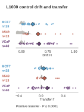
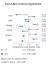

The untreated baseline moves.
Control drift is reproducible in L1000. In Parse-Epi, the same control changes differently across cell lineages. An earlier control cannot stand in for the target-time control.


View the quantitative evidence
0.318–0.500L1000 6→24 h noise-corrected drift energy (MCF7, A549, VCaP)
19 + 12Hallmark & PROGENy programmes drifting in ≥2 lines